pacman::p_load(readr, dplyr, lubridate, ggplot2, tmap, sf, spNetwork, spatstat, plotly, gtsummary, sparr, terra)Take-home Exercise 01
Applying spatial and spatio-temporal point pattern analysis methods to identify factors affecting road traffic accidents in the Bangkok Metropolitan Region.
1 Assignment: Geospatial analytics for Public safety
Reference: ISSS626 Take-home Exercise 1: Geospatial Analytics for Public Safety
2 Overview
This take-home exercise investigates the spatial and/or spatio-temporal patterns of public-safety point events using road traffic accidents within the Bangkok Greater Metropolitan Area.
The object of the exercise are:
To prepare and integrate real-world geospatial and temporal data for spatial and spatio-temporal point-pattern analysis.
To investigate first-order properties of the point pattern by examining how the intensity or distribution of events varies across space and/or time.
To investigate second-order properties by examining whether events exhibit evidence of spatial or spatio-temporal interaction, such as clustering, inhibition, or approximate randomness.
To critically evaluate the analytical assumptions, methodological choices, and limitations associated with the selected point-pattern methods.
To communicate the analytical findings effectively through appropriate geovisualisation and geocommunication.
To translate the analytical evidence into meaningful implications for public-safety planning and management.
3 The data
The following 3 datasets will be used in this exercise.
| Dataset Name | Description | Format | Source |
|---|---|---|---|
| Thailand Road Accident [2019-2022] | Data on road accidents in Thailand, including details on location, severity, and date of incidents. | CSV | Kaggle |
| Thailand Roads (OpenStreetMap Export) | OpenStreetMap Geospatial data of Thailand. | ESRI Shapefile | Humanitarian Data Exchange (HDX) |
| Thailand - Subnational Administrative Boundaries | Boundaries of Thailand’s Geospatial dataset. | ESRI Shapefile | Humanitarian Data Exchange (HDX) |
About Thailand Road Accident dataset
This dataset provides comprehensive statistics on recorded road accidents in Thailand, spanning from approximately 2019 to 2022. The data was sourced from raw information provided by the Office of the Permanent Secretary, Ministry of Transport, which is also utilized in this public dashboard for easier access and visualization. The dataset encompasses various aspects of road accidents and aims to shed light on the trends and patterns within this critical area of concern, analysis of this data could be crucial in guiding road safety policies and measures.
| Column | Description |
|---|---|
| acc_code | The accident code or identifier. |
| incident_datetime | The date and time of the accident occurrence. |
| report_datetime | The date and time when the accident was reported. |
| province_th | The name of the province in Thailand, written in Thai. |
| province_en | The name of the province in Thailand, written in English. |
| agency | The government agency responsible for the road and traffic management. |
| route | The route or road segment where the accident occurred. |
| vehicle_type | The type of vehicle involved in the accident. |
| presumed_cause | The presumed cause or reason for the accident. |
| accident_type | The type or nature of the accident. |
| number_of_vehicles_involved | The number of vehicles involved in the accident. |
| number_of_fatalities | The number of fatalities resulting from the accident. |
| number_of_injuries | The number of injuries resulting from the accident. |
| weather_condition | The weather condition at the time of the accident. |
| latitude | The latitude coordinate of the accident location. |
| longitude | The longitude coordinate of the accident location. |
| road_description | The description of the road type or configuration where the accident occurred. |
| slope_description | The description of the slope condition at the accident location. |
The original data has total 81735 accident records in all over Thailand from 2019-2022. But in this exercise I only analyse for road traffic accidents happened in Bangkok in the year of 2022 which are 1990 accidents in total.
4 Data preparation
Install and load R packages
Noteset reproducibility value
In order to ensures that stochastic algorithms and randomized spatial processes yield identical results every time the workflow runs, we need to set reproducibility value.
set.seed(1234)Import road traffic accident data
Loading Thailand road traffic accidents 2019-2022.
bmr_acc <- read_csv(
"data/thai_road_accident_2019_2022.csv",
show_col_types = FALSE
)Checking for missing values
null_counts <- sum(is.na(bmr_acc))
null_counts[1] 718The dataset contains 718 missing values in total. We will check for missing values in each column to identify which columns have missing data. Listing the number of missing values for each column in the dataset
data.frame(
Column = colnames(bmr_acc),
Missing_Values = colSums(is.na(bmr_acc))
)There are 359 missing values in the latitude column and 359 missing values in the longitude column. Since these columns are crucial for spatial analysis, we will remove rows with missing values in these columns.
From Wikipedia, Bangkok Metropolitan Region (BMR) is the capital and most populous city of Thailand. It is located in the central part of the country, on the Chao Phraya River delta. The BMR consists of Bangkok and its surrounding provinces, including Nonthaburi, Pathum Thani, Samut Prakan, Nakhon Pathom, and Samut Sakhon. We will focus on the road traffic accidents that occurred these areas in the year of 2022. The dataset contains information on the location, severity, and date of accidents, which will be used for spatial and spatio-temporal point-pattern analysis.
bmr_acc_sf <- bmr_acc %>%
filter(province_en == "Bangkok" | province_en == "Nonthaburi" | province_en == "Pathum Thani" | province_en == "Samut Prakan" | province_en == "Nakhon Pathom" | province_en == "Samut Sakhon") %>%
#filter(year(incident_datetime) == 2022) %>%
filter(!is.na(longitude), !is.na(latitude)) %>%
st_as_sf(coords = c("longitude", "latitude"), crs = 4326) %>%
st_transform(crs = 32647) # UTM Zone 47N (EPSG:32647) for Bangkok Metropolitan RegionVerifying that the missing values have been removed
null_counts_after <- sum(is.na(bmr_acc_sf))
null_counts_after[1] 0Next we check for duplicate records in the dataset. Duplicate records can skew the analysis and lead to inaccurate results. We will identify and remove any duplicate rows based on the acc_code column, which serves as a unique identifier for each accident.
# Check for duplicate records based on the 'acc_code' column
duplicates <- bmr_acc_sf[duplicated(bmr_acc_sf$acc_code), ]
nrow(duplicates)[1] 0There are 0 duplicate records in the dataset based on the acc_code column. Therefore, no further action is needed to remove duplicates. In case there were duplicates, we would remove them using the following code:
Removing duplicate records
# Saving the cleaned and filtered road traffic accident data for the Bangkok Metropolitan Region in RDS format for future use.
#| echo: false
#| eval: false
#saveRDS(bmr_acc_sf, file = "data/bmr_road_traffic_accidents_2019-2022.rds")bmr_acc_sf <- readRDS("data/bmr_road_traffic_accidents_2019-2022.rds")Import Thailand subnational administrative boundaries data
adm_boundary <- st_read(dsn = "../../data/takehome01/tha_admin2.shp", # layer 2 for district level boundaries
layer = "tha_admin2") %>%
st_transform(crs = 32647)Check the coordinate reference system (CRS) of the administrative boundaries
st_crs(adm_boundary) Coordinate Reference System: User input: EPSG:32647 wkt: PROJCRS[“WGS 84 / UTM zone 47N”, BASEGEOGCRS[“WGS 84”, ENSEMBLE[“World Geodetic System 1984 ensemble”, MEMBER[“World Geodetic System 1984 (Transit)”], MEMBER[“World Geodetic System 1984 (G730)”], MEMBER[“World Geodetic System 1984 (G873)”], MEMBER[“World Geodetic System 1984 (G1150)”], MEMBER[“World Geodetic System 1984 (G1674)”], MEMBER[“World Geodetic System 1984 (G1762)”], MEMBER[“World Geodetic System 1984 (G2139)”], MEMBER[“World Geodetic System 1984 (G2296)”], ELLIPSOID[“WGS 84”,6378137,298.257223563, LENGTHUNIT[“metre”,1]], ENSEMBLEACCURACY[2.0]], PRIMEM[“Greenwich”,0, ANGLEUNIT[“degree”,0.0174532925199433]], ID[“EPSG”,4326]], CONVERSION[“UTM zone 47N”, METHOD[“Transverse Mercator”, ID[“EPSG”,9807]], PARAMETER[“Latitude of natural origin”,0, ANGLEUNIT[“degree”,0.0174532925199433], ID[“EPSG”,8801]], PARAMETER[“Longitude of natural origin”,99, ANGLEUNIT[“degree”,0.0174532925199433], ID[“EPSG”,8802]], PARAMETER[“Scale factor at natural origin”,0.9996, SCALEUNIT[“unity”,1], ID[“EPSG”,8805]], PARAMETER[“False easting”,500000, LENGTHUNIT[“metre”,1], ID[“EPSG”,8806]], PARAMETER[“False northing”,0, LENGTHUNIT[“metre”,1], ID[“EPSG”,8807]]], CS[Cartesian,2], AXIS[“(E)”,east, ORDER[1], LENGTHUNIT[“metre”,1]], AXIS[“(N)”,north, ORDER[2], LENGTHUNIT[“metre”,1]], USAGE[ SCOPE[“Navigation and medium accuracy spatial referencing.”], AREA[“Between 96°E and 102°E, northern hemisphere between equator and 84°N, onshore and offshore. China. Indonesia. Laos. Malaysia - West Malaysia. Mongolia. Myanmar (Burma). Russian Federation. Thailand.”], BBOX[0,96,84,102]], ID[“EPSG”,32647]]
Observing the administrative boundaries data, we can see that it contains information about the districts within Thailand, including their names and geometries. This data will be useful for spatial analysis and visualization of road traffic accidents in relation to administrative boundaries.
glimpse(adm_boundary) # Rows: 928 Columns: 27 $ adm2_name
Filtering the administrative boundaries to include only the districts within the Bangkok Metropolitan Region (BMR) for spatial analysis.
bmr_adm_boundary <- adm_boundary %>%
select("adm1_name") %>%
filter(adm1_name == "Bangkok" | adm1_name == "Nonthaburi" | adm1_name == "Pathum Thani" | adm1_name == "Samut Prakan" | adm1_name == "Nakhon Pathom" | adm1_name == "Samut Sakhon")Filtering the administrative boundaries to include only the districts within the Bangkok Metropolitan Region (BMR) in RDS format for spatial analysis.
bmr_adm_boundary <- read_rds("data/bmr_adm_boundary.rds")Visualizing the administrative boundaries of the Bangkok Metropolitan Region (BMR) using the tmap package.
tmap_mode("plot")
tm_shape(bmr_adm_boundary) +
tm_fill(col = "adm1_name", title = "Region") +
tm_text("adm1_name", size=0.6) +
tm_borders() +
tm_layout(main.title = "BMR Administrative Boundaries",
main.title.position = "center",
main.title.size = 3,
#title.position = c("center", "top"),
legend.position = c("left", "bottom"),
legend.text.size = 0.6
)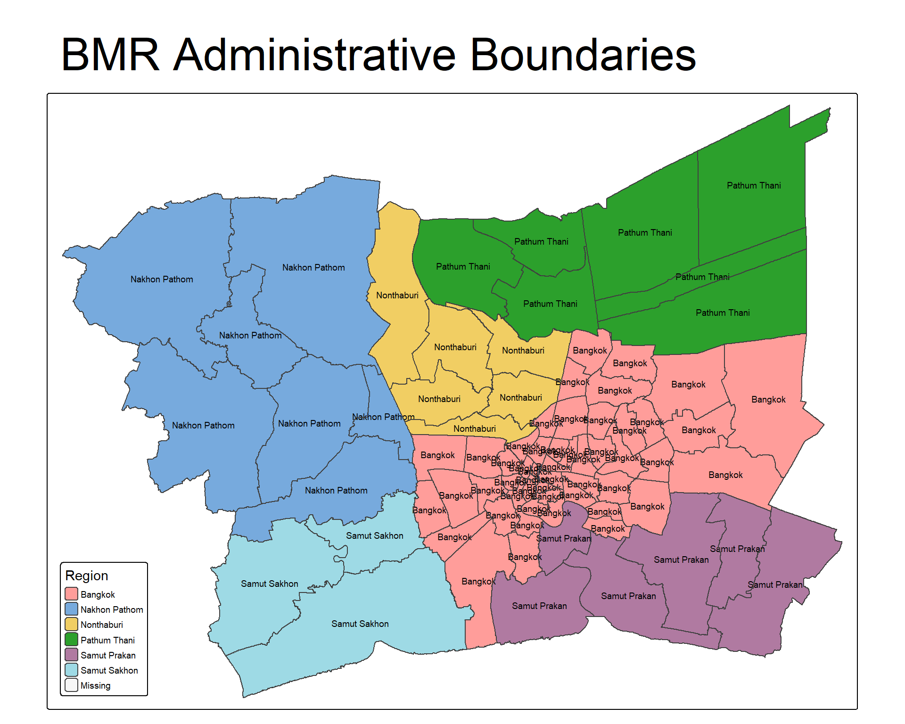
Import Thailand road network data from OpenStreetMap
Import road network data for Thailand from OpenStreetMap using the sf package.
thailand_roads <- st_read(dsn = "data/hotosm_tha_roads_lines_shp.shp", layer = "hotosm_tha_roads_lines_shp") %>%
st_set_crs(4326) %>% # Set the coordinate reference system to WGS 84 (EPSG:4326)
st_transform(crs = 32647) # UTM Zone 47N (EPSG:32647) for Bangkok Metropolitan RegionReading layer `hotosm_tha_roads_lines_shp' from data source `C:\hungthq\ISSS626-GAA\Take-home_Ex\Take-home_Ex01\data\hotosm_tha_roads_lines_shp.shp' using driver `ESRI Shapefile' Simple feature collection with 2833401 features and 14 fields Geometry type: MULTILINESTRING Dimension: XY Bounding box: xmin: 97.33814 ymin: 5.643645 xmax: 105.6528 ymax: 20.47168 Geodetic CRS: WGS 84The road network data contains ~2.8M road segments in Thailand. We will filter the data to include only the road segments within the Bangkok Metropolitan Region (BMR) for spatial analysis.
bmr_roads_orig <- thailand_roads %>%
st_intersection(bmr_adm_boundary) # Filter road segments within the BMR
NoteNote
The geospatial data is in the form of MULTILINESTRING geometries, which represent the road segments as lines. To simplify the analysis, we will convert the MULTILINESTRING geometries to LINESTRING geometries using the st_cast() function from the sf package. This will allow us to work with individual road segments as separate features.
bmr_roads <- bmr_roads_orig %>%
st_cast("LINESTRING") # Convert MULTILINESTRING to LINESTRING geometriesCheck the coordinate reference system of the BMR road network data
st_crs(bmr_roads) Coordinate Reference System: User input: EPSG:32647 wkt: PROJCRS["WGS 84 / UTM zone 47N", BASEGEOGCRS["WGS 84", ENSEMBLE["World Geodetic System 1984 ensemble", MEMBER["World Geodetic System 1984 (Transit)"], MEMBER["World Geodetic System 1984 (G730)"], MEMBER["World Geodetic System 1984 (G873)"], MEMBER["World Geodetic System 1984 (G1150)"], MEMBER["World Geodetic System 1984 (G1674)"], MEMBER["World Geodetic System 1984 (G1762)"], MEMBER["World Geodetic System 1984 (G2139)"], MEMBER["World Geodetic System 1984 (G2296)"], ELLIPSOID["WGS 84",6378137,298.257223563, LENGTHUNIT["metre",1]], ENSEMBLEACCURACY[2.0]], PRIMEM["Greenwich",0, ANGLEUNIT["degree",0.0174532925199433]], ID["EPSG",4326]], CONVERSION["UTM zone 47N", METHOD["Transverse Mercator", ID["EPSG",9807]], PARAMETER["Latitude of natural origin",0, ANGLEUNIT["degree",0.0174532925199433], ID["EPSG",8801]], PARAMETER["Longitude of natural origin",99, ANGLEUNIT["degree",0.0174532925199433], ID["EPSG",8802]], PARAMETER["Scale factor at natural origin",0.9996, SCALEUNIT["unity",1], ID["EPSG",8805]], PARAMETER["False easting",500000, LENGTHUNIT["metre",1], ID["EPSG",8806]], PARAMETER["False northing",0, LENGTHUNIT["metre",1], ID["EPSG",8807]]], CS[Cartesian,2], AXIS["(E)",east, ORDER[1], LENGTHUNIT["metre",1]], AXIS["(N)",north, ORDER[2], LENGTHUNIT["metre",1]], USAGE[ SCOPE["Navigation and medium accuracy spatial referencing."], AREA["Between 96°E and 102°E, northern hemisphere between equator and 84°N, onshore and offshore. China. Indonesia. Laos. Malaysia - West Malaysia. Mongolia. Myanmar (Burma). Russian Federation. Thailand."], BBOX[0,96,84,102]], ID["EPSG",32647]]Exploring the attributes of the BMR road network data to understand the available information for analysis.
glimpse(bmr_roads) Rows: 592,641 Columns: 16 $ name <chr> NA, NA, NA, "ถนนราชดำเนินกลาง", "ถนนราชดำเนินกลาง", NA, NA, NA, "ซอยสามเสน 1", "ถนนสมเด็จพระปิ่นเกล้า", "ถนนหน้าหับเผย", NA, NA, NA, "ถนนหน้าหับเผย", NA, NA, NA, NA, NA, NA, N… $ name_en <chr> NA, NA, NA, "Ratchadamnoen Klang Road", "Ratchadamnoen Klang Road", NA, NA, NA, "Soi Samsen 1", "Somdet Phra Pinklao Road", "Na Hap Phoei Road", NA, NA, NA, "Na Ha… $ highway <chr> "steps", "footway", "footway", "secondary", "secondary", "service", "footway", "footway", "residential", "primary", "footway", "service", "service", "service", "fo… $ surface <chr> NA, NA, NA, "asphalt", "asphalt", NA, "paving_stones", "paving_stones", "concrete", "asphalt", "paving_stones", NA, NA, NA, "paving_stones", NA, NA, NA, "paving_st… $ smoothness <chr> NA, NA, NA, NA, NA, NA, NA, NA, NA, "excellent", NA, NA, NA, NA, NA, NA, NA, NA, NA, NA, NA, NA, NA, NA, NA, NA, NA, NA, NA, NA, NA, NA, NA, NA, NA, NA, NA, NA, NA… $ width <chr> NA, NA, NA, NA, NA, NA, NA, NA, "5", NA, NA, NA, NA, NA, NA, NA, NA, NA, NA, NA, NA, NA, NA, NA, NA, NA, NA, NA, NA, NA, NA, NA, NA, NA, NA, NA, NA, NA, NA, NA, NA… $ lanes <chr> NA, NA, NA, NA, "3", NA, NA, NA, NA, "3", NA, NA, NA, NA, NA, NA, NA, NA, NA, NA, NA, NA, NA, NA, NA, NA, NA, NA, NA, NA, NA, NA, NA, NA, NA, NA, NA, NA, NA, NA, N… $ oneway <chr> NA, NA, NA, "yes", "yes", "yes", NA, NA, "yes", "yes", NA, NA, NA, NA, NA, NA, NA, NA, NA, NA, NA, NA, NA, "no", "yes", NA, "yes", NA, NA, NA, NA, NA, NA, NA, NA, … $ bridge <chr> NA, NA, NA, "yes", "yes", NA, NA, NA, NA, NA, NA, NA, NA, NA, NA, NA, NA, NA, NA, NA, NA, NA, NA, NA, NA, NA, NA, NA, NA, NA, NA, NA, NA, NA, NA, NA, NA, NA, NA, N… $ layer <chr> NA, NA, NA, "1", "1", NA, NA, NA, NA, NA, NA, NA, NA, NA, NA, NA, NA, NA, NA, NA, NA, NA, NA, NA, NA, NA, NA, NA, NA, NA, NA, NA, NA, NA, NA, NA, NA, NA, NA, NA, N… $ source <chr> NA, NA, NA, NA, NA, NA, NA, NA, NA, NA, NA, NA, NA, NA, NA, NA, NA, NA, NA, NA, NA, NA, NA, NA, NA, NA, NA, NA, NA, NA, NA, NA, NA, NA, NA, NA, NA, NA, "Bing", NA,… $ name_th <chr> NA, NA, NA, "ถนนราชดำเนินกลาง", "ถนนราชดำเนินกลาง", NA, NA, NA, "ซอยสามเสน 1", "ถนนสมเด็จพระปิ่นเกล้า", "ถนนหน้าหับเผย", NA, NA, NA, "ถนนหน้าหับเผย", NA, NA, NA, NA, NA, NA, N… $ osm_id <dbl> 826834653, 1264028727, 1264028728, 175803643, 175803646, 707021285, 1294704160, 1296288435, 274710632, 25715013, 196823083, 626858467, 1162004952, 1162004953, 1223… $ osm_type <chr> "ways_line", "ways_line", "ways_line", "ways_line", "ways_line", "ways_line", "ways_line", "ways_line", "ways_line", "ways_line", "ways_line", "ways_line", "ways_l… $ adm1_name <chr> "Bangkok", "Bangkok", "Bangkok", "Bangkok", "Bangkok", "Bangkok", "Bangkok", "Bangkok", "Bangkok", "Bangkok", "Bangkok", "Bangkok", "Bangkok", "Bangkok", "Bangkok"… $ geometry <LINESTRING [m]> LINESTRING (661956.2 151980..., LINESTRING (661230.6 151997..., LINESTRING (661234.5 151996..., LINESTRING (661606.9 152137..., LINESTRING (661637 15213…Observing the attributes of the BMR road network data, we can see that it contains information about the road segments, including their names, types, and geometries. This data will be useful for spatial analysis and visualization of road traffic accidents in relation to the road network. For further analysis, we will focus on the road segments that are classified as “primary” roads, which are major roads that connect different regions and are likely to have higher traffic volumes. We will filter the data to include only these primary road segments for spatial analysis from “highway” attribute.
Displaying the unique values in the “highway” attribute to identify the different types of roads in the BMR road network data.
unique(bmr_roads$highway)[1] "steps" "footway" "secondary" "service" "residential" "primary" "tertiary_link" "path" "secondary_link" "pedestrian" [11] "tertiary" "primary_link" "unclassified" "corridor" "cycleway" "busway" "construction" "motorway_link" "track" "trunk_link" [21] "trunk" "motorway" "proposed" "road" "raceway" "platform" For the study purpose, we will focus on the primary roads in the BMR road network data. The primary roads are classified as “motoway”, “trunk”, “primary”, “secondary”, “tertiary” and “unclassified”. We will filter the data to include only these primary road segments for spatial analysis.
hw_types <- c("motorway", "trunk", "primary", "secondary", "tertiary", "unclassified")
bmr_roads_filtered <- bmr_roads %>%
select("highway") %>%
filter(highway %in% hw_types)glimpse(bmr_roads_filtered)Rows: 24,054 Columns: 2 $ highway <chr> "secondary", "secondary", "primary", "secondary", "secondary", "secondary", "secondary", "primary", "primary", "secondary", "secondary", "secondary", "tertiary", "se… $ geometry <LINESTRING [m]> LINESTRING (661606.9 152137..., LINESTRING (661637 1521372,..., LINESTRING (661716.3 152142..., LINESTRING (662279.2 152244..., LINESTRING (661792.8 15202…plotting the filtered primary road network data for the Bangkok Metropolitan Region (BMR) using the tmap package.
tmap_mode("plot")
tm_shape(bmr_roads_filtered) +
tm_lines(col = "highway", title = "Road Type") +
tm_layout(main.title = "BMR Primary Road Network",
main.title.position = "center",
main.title.size = 3,
legend.position = c("left", "bottom")
)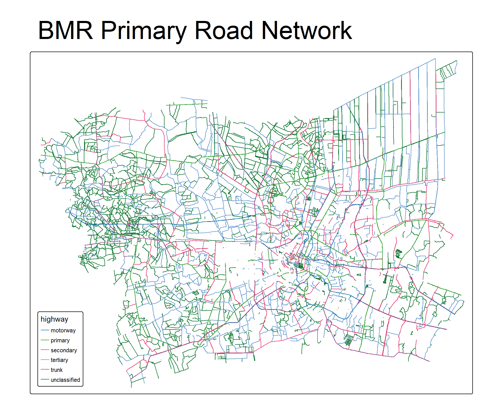
NoteNote
By filtering the road network data to include only the primary roads, we reduce the size of the dataset from 593,000 road segments to 24,000 road segments. This will make the spatial analysis more efficient and focused on the major roads that are likely to have higher traffic volumes and accident rates.
# save the filtered primary road network data for the Bangkok Metropolitan Region (BMR) in RDS format for future use.
saveRDS(bmr_roads_filtered, file = "data/bmr_primary_roads.rds")5 Exploratory Data Analysis (EDA)
In this section, we will perform exploratory data analysis (EDA) on the road traffic accident data for the Bangkok Metropolitan Region (BMR) in the year 2022. The goal of EDA is to understand the distribution and characteristics of the data, identify patterns and trends, and detect any anomalies or outliers that may affect the analysis.
Overall plot
Ploting 3 datasets onto a single choropleth map to have an general view.
tmap_mode('plot')
tm_shape(bmr_adm_boundary) +
tm_polygons(col='adm1_name', alpha=0.6, border.col="black", lwd=0.7, title = "Region") +
tm_shape(bmr_primary_roads) +
tm_lines(col = "darkgreen", lwd=1, alpha = 0.8) +
tm_shape(bmr_acc_sf) +
tm_dots(col = "red", size = 0.3, alpha = 0.5) +
tm_layout(main.title = "Road Traffic Accidents in Bangkok Metropolitan Region (2019 - 2022)",
main.title.position = "center",
main.title.size = 3,
#title.position = c("center", "top"),
legend.position = c("left", "bottom"),
legend.text.size = 0.6
)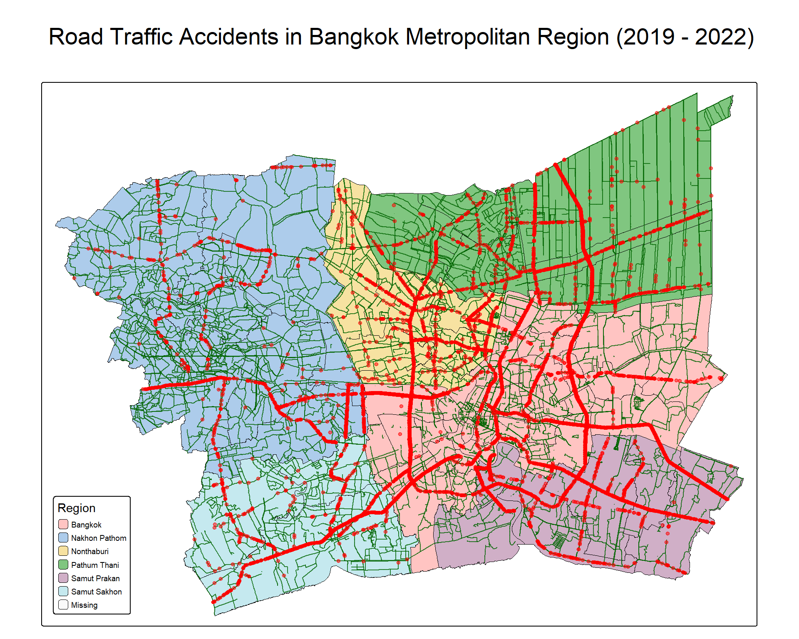
NoteNote
The overall plot provides a visual summary of the road traffic accidents in the Bangkok Metropolitan Region (BMR) for the year 2019 to 2022. It overlays the administrative boundaries, primary road network, and accident locations, allowing us to quickly identify areas with high accident density and their relation to major roads.
Observing the map, we can see that the majority of accidents are concentrated along the primary roads and in densely populated areas, highlighting the importance of focusing on these regions for traffic safety interventions.
This insight indicates that the 6 road types classified as primary roads are the most critical areas to target for traffic safety improvements and accident prevention measures.
Visualization Geographic Distribution of Accidents by year
bmr_acc_sf <- bmr_acc_sf %>%
mutate(year = year(incident_datetime))tm_shape(bmr_adm_boundary) +
#tm_polygons(col='adm1_name', alpha=0.6, border.col="black", lwd=0.7, title = "Region") +
tm_shape(bmr_primary_roads) +
tm_lines(col = "darkgreen", lwd=0.7, alpha = 0.8) +
tm_shape(bmr_acc_sf) +
tm_dots(col = "red", size = 0.25, alpha = 0.6) +
tm_facets(by = "year") +
tm_layout(
main.title = "Road Traffic Accidents in Bangkok Metropolitan Region (2019-2022)",
main.title.position = c("center", "top"),
main.title.size = 0.9,
frame = FALSE,
#legend.outside = TRUE,
#legend.outside.position = "left",
#legend.outside.size = 0.25,
#legend.text.size = 0.55,
#legend.title.size = 0.7
)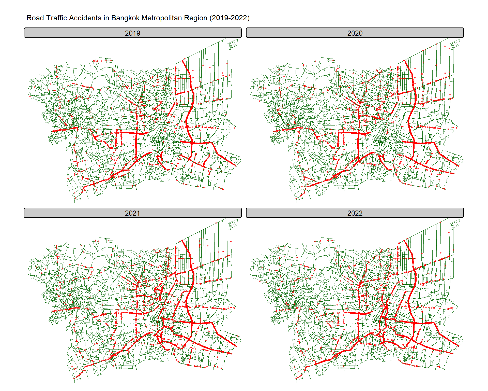
Accidents by year and province
# calculate total accidents by year
bmr_acc_by_year <- bmr_acc_sf %>%
st_drop_geometry() %>%
group_by(year) %>%
summarise(total_accidents = n())
# Calculate total accidents by province and year
bmr_acc_by_province_year <- bmr_acc_sf %>%
st_drop_geometry() %>%
group_by(year, province_en) %>%
summarise(total_accidents = n()) %>%
ungroup()
# Summarise total accidents for each year (trend)
total_accidents_by_year <- bmr_acc_by_province_year %>%
group_by(year) %>%
summarise(total_accidents = sum(total_accidents))
# create stacked bar chart for accidents by province and year
fig_acc_by_province_year <- ggplot(bmr_acc_by_province_year, aes(x = factor(year), y = total_accidents, fill = province_en)) +
geom_bar(stat = "identity") +
labs(title = "Road Traffic Accidents by Province and Year",
x = "Year",
y = "Total Accidents",
fill = "Province_en") +
theme_minimal() +
# add trend line for total accidents by year
geom_line(data = total_accidents_by_year,
aes(x = factor(year), y = total_accidents, group = 1),
color = "black", size = 1,
linetype = "dashed",
inherit.aes = FALSE)
fig_acc_by_province_year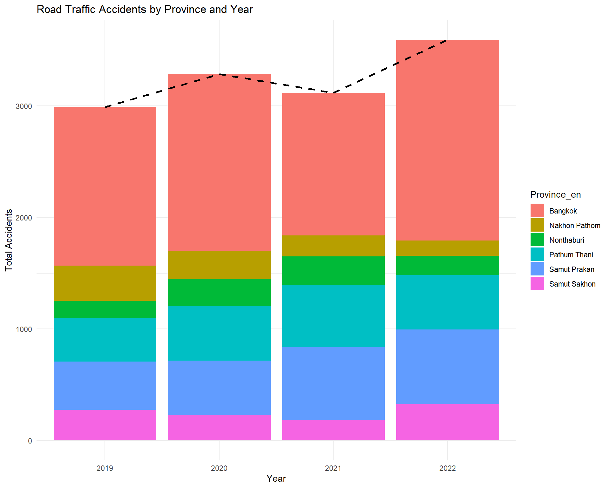
Note
- Accident trend is represented by the dashed black line in the stacked bar chart. The line indicate an uptrend in the total number of accidents over the years.
- Bangkok consistently has the highest number of accidents compared to other provinces in the Bangkok Metropolitan Region.
- The number of accidents of other provinces shows a relatively stable trend over the years.
- The number of accidents in 2022 rises compared to previous years, it’s related to the rise in number of accidents in Bangkok.
Visualization Geographic Distribution of Accidents by month
# mutate month column
bmr_acc_sf <- bmr_acc_sf %>%
mutate(month = lubridate::month(incident_datetime, label = TRUE)) # Visualization Geographic Distribution of Accidents by month
tm_shape(bmr_adm_boundary) +
#tm_polygons(col='adm1_name', alpha=0.6, border.col="black", lwd=0.7, title = "Region") +
tm_shape(bmr_primary_roads) +
tm_lines(col = "darkgreen", lwd=0.7, alpha = 0.8) +
tm_shape(bmr_acc_sf) +
tm_dots(col = "red", size = 0.25, alpha = 0.6) +
tm_facets(by = "month") +
tm_layout(
main.title = "Road Traffic Accidents by month in Bangkok Metropolitan Region (2019-2022)",
main.title.position = c("center", "top"),
main.title.size = 0.9,
frame = FALSE
)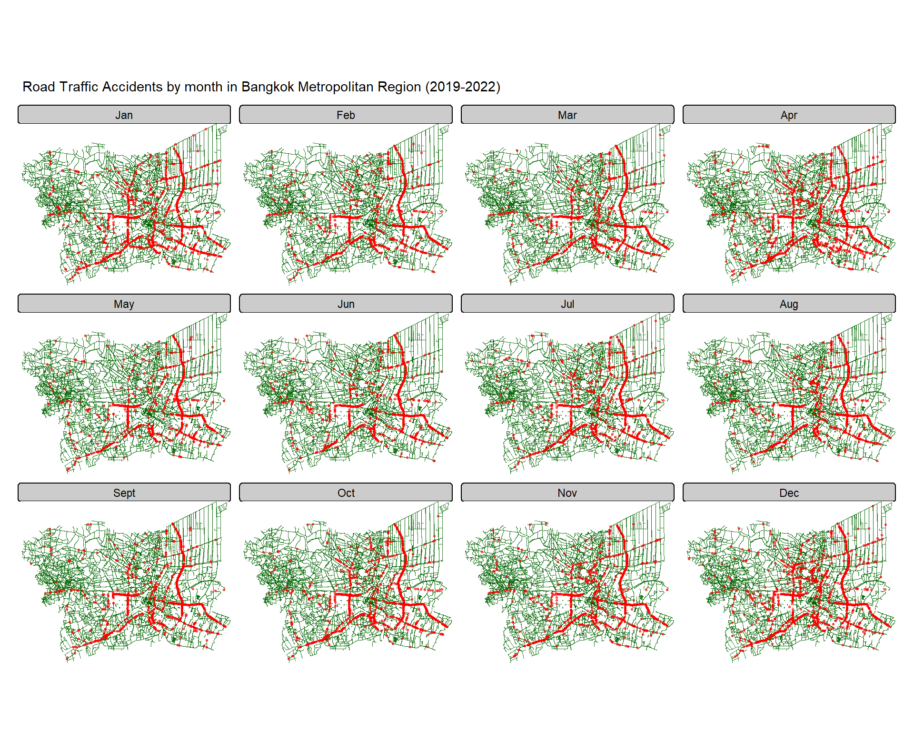
Visualization Geographic Distribution of Accidents by month
# create a summary of accidents by month and province
bmr_acc_by_month_province <- bmr_acc_sf %>%
st_drop_geometry() %>%
group_by(month, province_en) %>%
summarise(total_accidents = n()) %>%
ungroup()
# create stacked bar chart for accidents by month and province
fig_acc_by_month_province <- ggplot(bmr_acc_by_month_province, aes(x = month, y = total_accidents, fill = province_en)) +
geom_bar(stat = "identity") +
labs(title = "Road Traffic Accidents by Month and Province",
x = "Month",
y = "Total Accidents",
fill = "Province_en") +
theme_minimal()
fig_acc_by_month_province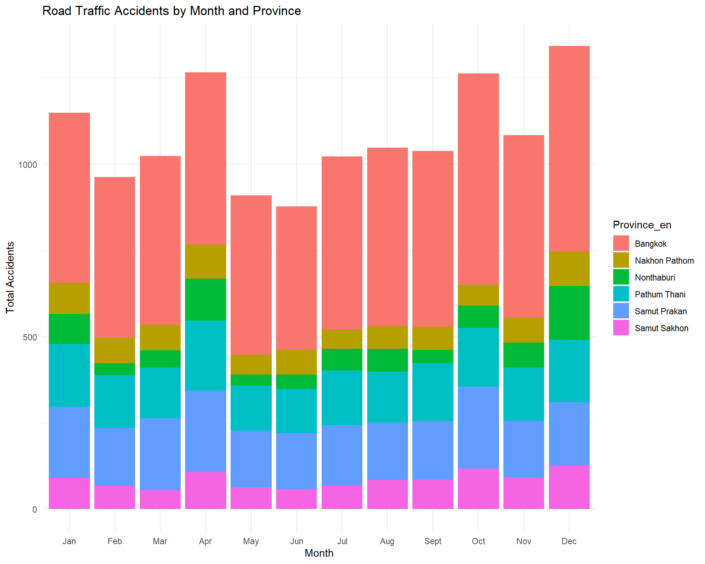
Note
- The stacked bar chart shows the distribution of road traffic accidents by month and province.
- The number of accidents spikes in certain months (e.g., April and December), indicating potential seasonal trends or periods of increased traffic activity.
Visualization Geographic Distribution of Accidents by day of the week
# mutate day of the week column
bmr_acc_sf <- bmr_acc_sf %>%
mutate(day_of_week = lubridate::wday(incident_datetime, label = TRUE)) # Visualization Geographic Distribution of Accidents by day of the week
tm_shape(bmr_adm_boundary) +
#tm_polygons(col='adm1_name', alpha=0.6, border.col="black", lwd=0.7, title = "Region") +
tm_shape(bmr_primary_roads) +
tm_lines(col = "darkgreen", lwd=0.7) +
tm_shape(bmr_acc_sf) +
tm_dots(col = "red", size = 0.25, alpha = 0.6) +
tm_facets(by = "day_of_week") +
tm_layout(
main.title = "Road Traffic Accidents by day of the week in Bangkok Metropolitan Region (2019-2022)",
main.title.position = c("center", "top"),
main.title.size = 0.9,
frame = FALSE
)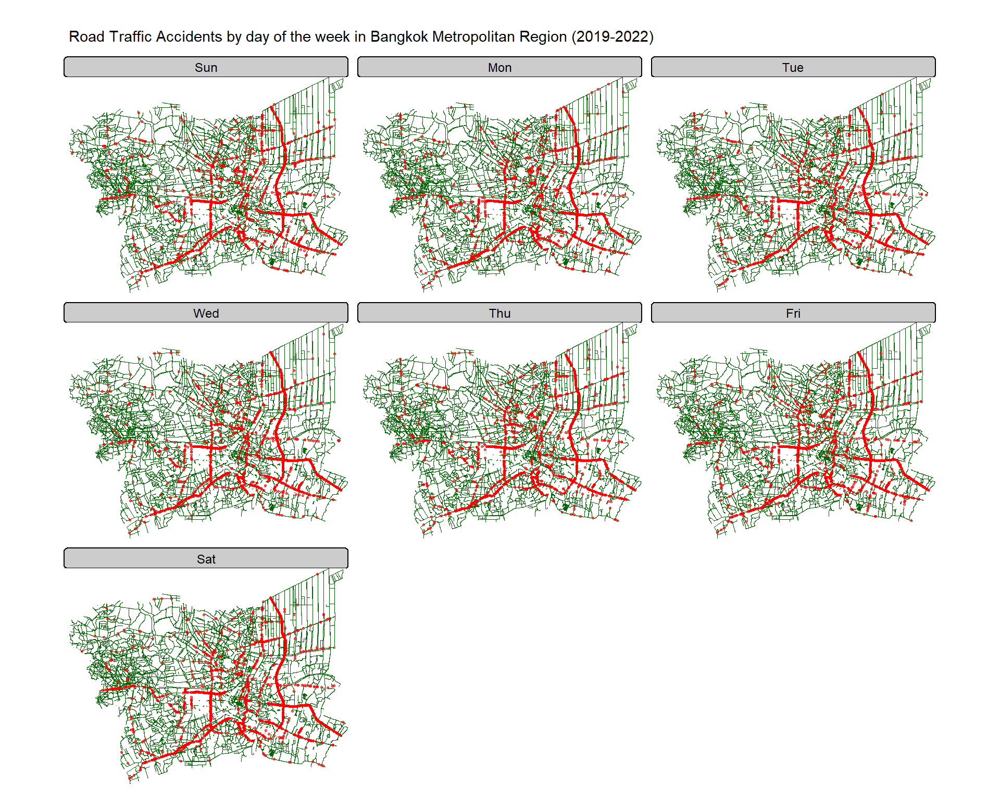
Bar chart accidents by days of the week
#compute accidents by day of the week
accidents_by_day_of_week <- bmr_acc_sf %>%
st_drop_geometry() %>%
mutate(
day_type = case_when(
day_of_week %in% c("Sat", "Sun") ~ "Weekend",
TRUE ~ "Weekday"
)
) %>%
group_by(day_of_week, day_type) %>%
summarise(total_accidents = n()) %>%
ungroup()# create a bar chart for accidents by day of the week and day type in different colors
ggplot(accidents_by_day_of_week, aes(x = day_of_week, y = total_accidents, fill = day_type)) +
geom_bar(stat = "identity", position = "dodge") +
labs(title = "Road Traffic Accidents by Day of the Week and Day Type",
x = "Day of the Week",
y = "Total Accidents",
fill = "Day Type") +
theme_minimal()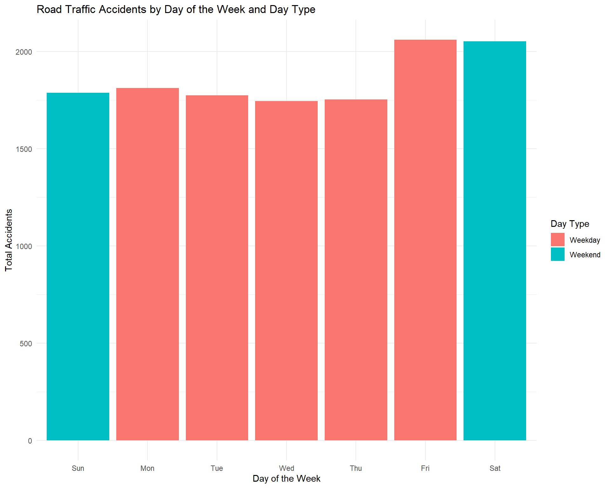
Note
- Weekdays generally have fewer accidents compared to weekends except for Friday.
- Both Friday & Saturday have relatively high numbers of accidents suggesting increased traffic activity or risky driving behavior (possibly due to social events or nightlife - parties, gatherings, or late-night activities. Be noted that in general, people tend to drink more alcohol on Friday and Saturday nights).
Visualization Geographic Distribution of Accidents by peak hours
# mutate peak hour column
bmr_acc_sf <- bmr_acc_sf %>%
#st_drop_geometry() %>%
mutate(hour = lubridate::hour(incident_datetime)) %>%
mutate(
peak_hour = case_when(
hour %in% 6:9 ~ "Morning Peak",
hour %in% 16:19 ~ "Afternoon Peak",
TRUE ~ "Off-Peak"
)
) # Visualization Geographic Distribution of Accidents by peak hours
tmap_mode('plot')
tm_shape(bmr_adm_boundary) +
tm_shape(bmr_primary_roads) +
tm_lines(col = "darkgreen", lwd=0.7) +
tm_shape(bmr_acc_sf) +
tm_dots(col = "red", size = 0.25, fill_alpha = 0.6) +
tm_facets(by = "peak_hour") +
tm_title ("Road Traffic Accidents by Peak Hours in Bangkok Metropolitan Region (2019-2022)",
position = c("center", "top"),
size = 1.5,
)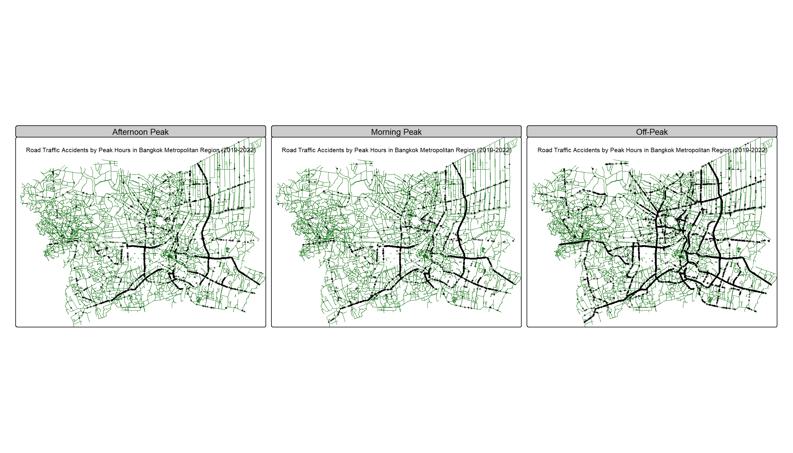
Visualization Geographic Distribution of Accidents by day-night
# mutate peak hour column
bmr_acc_sf <- bmr_acc_sf %>%
#st_drop_geometry() %>%
mutate(daynight = lubridate::hour(incident_datetime)) %>%
mutate(
daynight = case_when(
hour %in% 6:18 ~ "Day",
TRUE ~ "Night"
)
) # Visualization Geographic Distribution of Accidents by peak hours
tmap_mode('plot')
tm_shape(bmr_adm_boundary) +
tm_shape(bmr_primary_roads) +
tm_lines(col = "darkgreen", lwd=0.7) +
tm_shape(bmr_acc_sf) +
tm_dots(col = "red", size = 0.25, fill_alpha = 0.6) +
tm_facets(by = "daynight") +
tm_title ("Road Traffic Accidents by Day Night in Bangkok Metropolitan Region (2019-2022)",
position = c("center", "top"),
size = 1.5,
)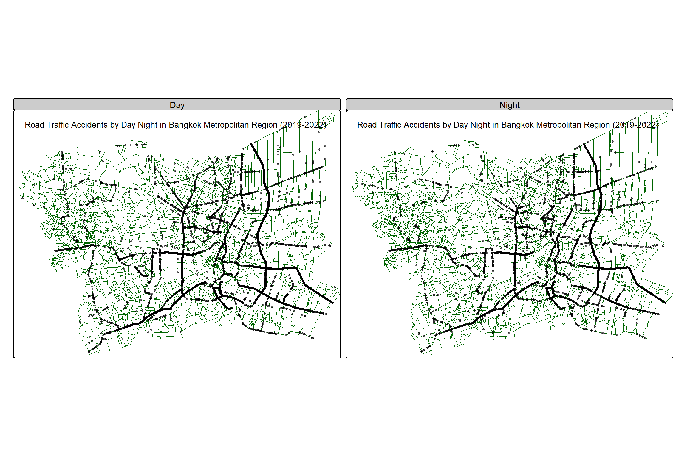
bmr_acc_sf <- bmr_acc_sf %>%
# Extract the hour (0 to 23)
mutate(hour = lubridate::hour(incident_datetime)) %>%
# Categorize into 4-hour blocks
mutate(
time_block = case_when(
hour %in% 0:3 ~ "00:00 - 03:59",
hour %in% 4:7 ~ "04:00 - 07:59",
hour %in% 8:11 ~ "08:00 - 11:59",
hour %in% 12:15 ~ "12:00 - 15:59",
hour %in% 16:19 ~ "16:00 - 19:59",
hour %in% 20:23 ~ "20:00 - 23:59"
),
# Convert to an ordered factor so plots display them in the correct time order
time_block = factor(time_block, levels = c(
"00:00 - 03:59",
"04:00 - 07:59",
"08:00 - 11:59",
"12:00 - 15:59",
"16:00 - 19:59",
"20:00 - 23:59"
))
)names(bmr_acc_sf) [1] "acc_code" "incident_datetime"
[3] "report_datetime" "province_th"
[5] "province_en" "agency"
[7] "route" "vehicle_type"
[9] "presumed_cause" "accident_type"
[11] "number_of_vehicles_involved" "number_of_fatalities"
[13] "number_of_injuries" "weather_condition"
[15] "road_description" "slope_description"
[17] "geometry" "year"
[19] "month" "day_of_week"
[21] "hour" "peak_hour"
[23] "daynight" "time_block" # Visualization Geographic Distribution of Accidents by peak hours
tmap_mode('plot')
tm_shape(bmr_adm_boundary) +
tm_shape(bmr_primary_roads) +
tm_lines(col = "darkgreen", lwd=0.7) +
tm_shape(bmr_acc_sf) +
tm_dots(col = "red", size = 0.25, fill_alpha = 0.6) +
tm_facets(by = "time_block") +
tm_title ("Road Traffic Accidents by 4h block in Bangkok Metropolitan Region (2019-2022)",
position = c("center", "top"),
size = 1.5,
)
6 First-order Spatial Analysis
In this section, we will perform a first-order spatial analysis to understand the distribution of road traffic accidents in the Bangkok Metropolitan Region.
# Build owin from the BMR union, and convert to ppp
bmr_owin <- as.owin(st_union(bmr_adm_boundary))
acc_ppp <- as.ppp(st_coordinates(bmr_acc_sf), W = bmr_owin)
#acc_ppp # summary: check n, window area, unitsplot(acc_ppp, main = "BMR 2019 - 2022 Accidents")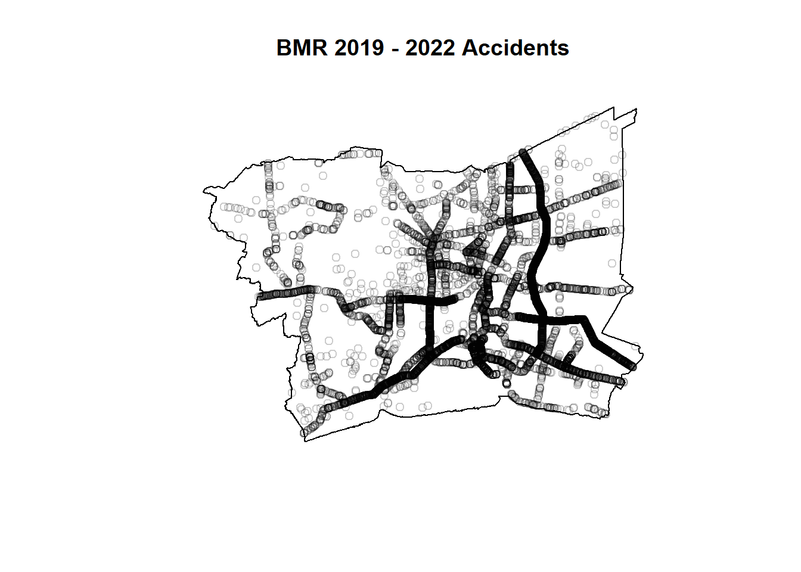
Clark-Evans Test for Nearest neighbor analysis
clark_evans_test <- clarkevans.test(acc_ppp,
correction="none",
clipregion = bmr_owin,
alternative = "clustered"
)
clark_evans_test
Clark-Evans test
No edge correction
Z-test
data: acc_ppp
R = 0.19109, p-value < 2.2e-16
alternative hypothesis: clustered (R < 1) Clark-Evans test
No edge correction
Z-testdata: acc_ppp R = 0.30091, p-value < 2.2e-16 alternative hypothesis: clustered (R < 1)
Note
The results provide overwhelmingly strong evidence that your traffic accidents are highly clustered rather than randomly scattered across the region. Here is the breakdown of the two key metrics:
- The R-value (0.30091): The Clark-Evans index (\(R\)) measures the distance between nearest neighbors. An \(R\) value of 1.0 means complete spatial randomness, while values greater than 1 mean points are evenly dispersed. Your value of roughly 0.30 is well below 1, meaning the accidents are highly clustered. On average, the distance between any accident and its nearest neighbor is only 30% of what it would be if they were distributed entirely at random.
- The p-value (< 2.2e-16): This is the smallest p-value R can display, essentially zero. It means the probability of this clustered pattern happening by random chance is virtually non-existent. You can confidently reject the null hypothesis of complete spatial randomness (CSR).
To visualize the exact locations of those clusters, we create a Kernel Density Estimation (KDE) map using the spatstat package.
Calculate the KDE to visualize accident clusters.
# Calculate the kernel density estimate
acc_kde <- density(acc_ppp, sigma = 0.1)
plot(acc_kde, main = "BMR 2022 Accidents - KDE")
# add the regional boundary on top for context
plot(bmr_owin, add = TRUE, lwd = 1.5, border = "yellow")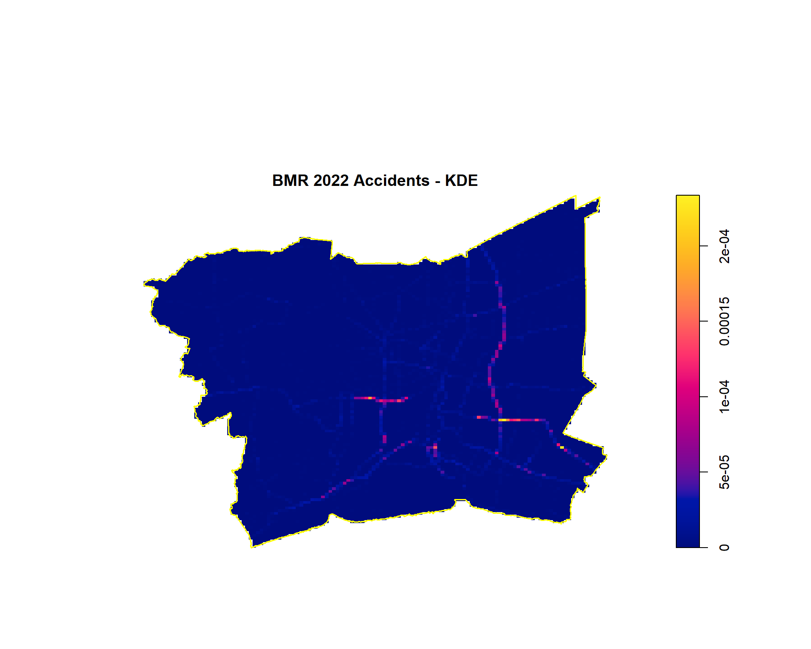
Quadrat Analysis
Note
Quadrat analysis is a foundational spatial statistics method used to determine whether a set of points (like your traffic accidents) is randomly distributed, clustered, or evenly dispersed across a study area.
Here is how it works:
The Grid: The study area is divided into a grid of equal-sized sub-regions, called “quadrats” (like laying a checkerboard over your map of the Bangkok Metropolitan Region).
The Count: The algorithm counts the number of points that fall inside each quadrat.
The Comparison: It compares the observed counts against what you would expect if the points were completely random (Complete Spatial Randomness, or CSR).
# Define the number of quadrats along x and y directions
nx <- 10
ny <- 10
# Perform quadrat count
quadrat_counts <- quadratcount(acc_ppp, nx = nx, ny = ny)
quadrat_countstile
Tile row 1, col 8 Tile row 1, col 9 Tile row 1, col 10 Tile row 2, col 1
0 6 3 0
Tile row 2, col 2 Tile row 2, col 3 Tile row 2, col 4 Tile row 2, col 5
10 3 16 7
Tile row 2, col 6 Tile row 2, col 7 Tile row 2, col 8 Tile row 2, col 9
1 68 139 11
Tile row 2, col 10 Tile row 3, col 1 Tile row 3, col 2 Tile row 3, col 3
3 2 20 39
Tile row 3, col 4 Tile row 3, col 5 Tile row 3, col 6 Tile row 3, col 7
0 43 51 137
Tile row 3, col 8 Tile row 3, col 9 Tile row 3, col 10 Tile row 4, col 1
351 66 34 10
Tile row 4, col 2 Tile row 4, col 3 Tile row 4, col 4 Tile row 4, col 5
29 42 29 64
Tile row 4, col 6 Tile row 4, col 7 Tile row 4, col 8 Tile row 4, col 9
113 164 586 90
Tile row 4, col 10 Tile row 5, col 1 Tile row 5, col 2 Tile row 5, col 3
24 0 34 18
Tile row 5, col 4 Tile row 5, col 5 Tile row 5, col 6 Tile row 5, col 7
5 33 297 298
Tile row 5, col 8 Tile row 5, col 9 Tile row 5, col 10 Tile row 6, col 1
623 13 1 0
Tile row 6, col 2 Tile row 6, col 3 Tile row 6, col 4 Tile row 6, col 5
97 100 90 556
Tile row 6, col 6 Tile row 6, col 7 Tile row 6, col 8 Tile row 6, col 9
797 300 689 78
Tile row 6, col 10 Tile row 7, col 2 Tile row 7, col 3 Tile row 7, col 4
26 0 33 89
Tile row 7, col 5 Tile row 7, col 6 Tile row 7, col 7 Tile row 7, col 8
140 436 281 1186
Tile row 7, col 9 Tile row 7, col 10 Tile row 8, col 2 Tile row 8, col 3
695 0 0 45
Tile row 8, col 4 Tile row 8, col 5 Tile row 8, col 6 Tile row 8, col 7
13 213 440 822
Tile row 8, col 8 Tile row 8, col 9 Tile row 8, col 10 Tile row 9, col 2
443 478 432 0
Tile row 9, col 3 Tile row 9, col 4 Tile row 9, col 5 Tile row 9, col 6
66 302 359 1
Tile row 9, col 7 Tile row 9, col 8 Tile row 9, col 9 Tile row 9, col 10
28 66 61 58
Tile row 10, col 2 Tile row 10, col 3 Tile row 10, col 4 Tile row 10, col 5
0 60 1 0
Tile row 10, col 6 Tile row 10, col 7 Tile row 10, col 8 Tile row 10, col 9
0 0 3 12
Tile row 10, col 10
7 # Plot the quadrat counts
plot(acc_ppp, pch = 20, cex = 0.5, main = "BMR 2022 Accidents - Quadrat Analysis")
plot(quadrat_counts, add = TRUE, col = "red")
# Chi-squared test for CSR
quadrat_test <- quadrat.test(acc_ppp, nx = nx, ny = ny)
quadrat_test
Chi-squared test of CSR using quadrat counts
data: acc_ppp
X2 = 20675, df = 88, p-value < 2.2e-16
alternative hypothesis: two.sided
Quadrats: 89 tiles (irregular windows)KDE - comparing bandwidth selections
# Compare a few standard bandwidth selectors
bw_diggle <- bw.diggle(acc_ppp)
bw_ppl <- bw.ppl(acc_ppp)
bw_scott <- bw.scott(acc_ppp)
bw_diggle sigma
13.41546 bw_ppl sigma
244.6943 bw_scott sigma.x sigma.y
4530.028 3322.445 # Plot density surfaces side by side using each bandwidth
par(mfrow = c(1, 3))
plot(density(acc_ppp, sigma = bw_diggle), main = paste("bw.diggle =", round(bw_diggle)))
plot(density(acc_ppp, sigma = bw_ppl), main = paste("bw.ppl =", round(bw_ppl)))
plot(density(acc_ppp, sigma = bw_scott[1]), main = paste("bw.scott"))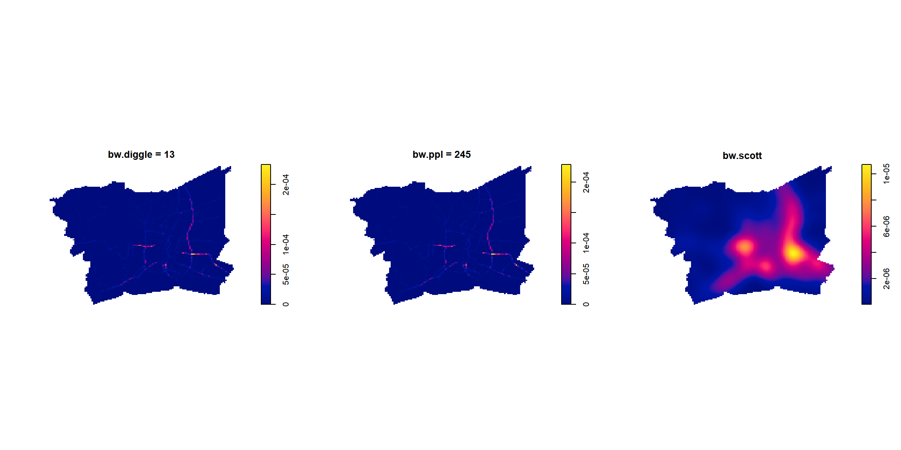
par(mfrow = c(1, 1))plot(density(acc_ppp, sigma = bw_scott), main = "bw.scott")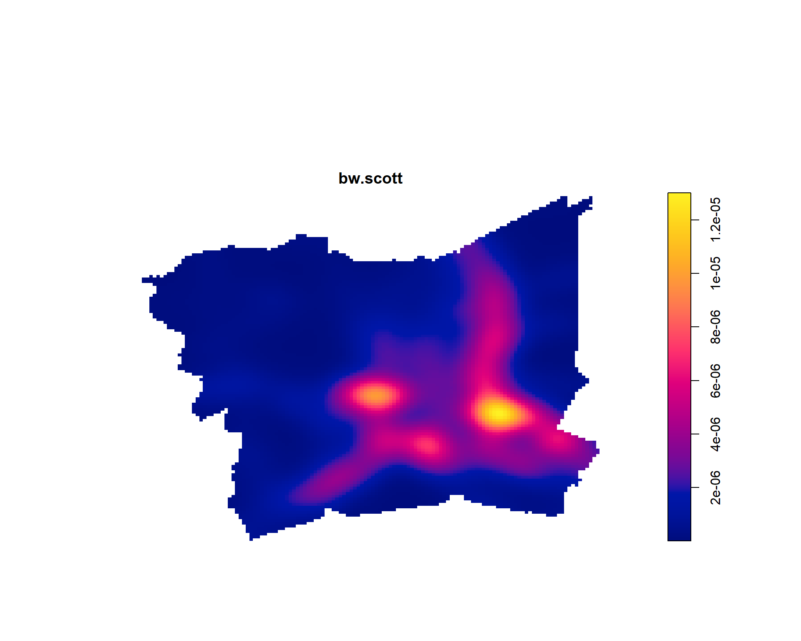
Plotting cartographic quality KDE maps
Converting gridded output into raster format for cartographic-quality plotting.
# Convert the KDE to a raster for better plotting
acc_kde_bw_terra <- rast(acc_kde)
plot(acc_kde_bw_terra, main = "Cartographic Quality KDE of Accidents")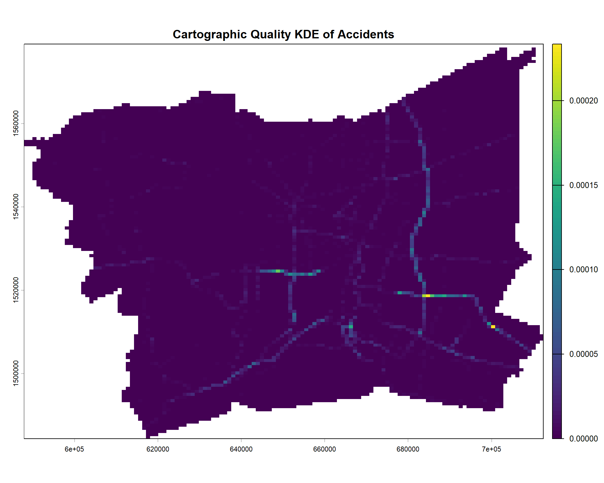
First-order SPPA at province level
Create owin object for the study window based on 6 provinces separately.
# Create owin objects for each province after projecting to the appropriate CRS
Bangkok_owin <- Bangkok %>%
st_transform(crs = 32647) %>%
as.owin()
Nonthaburi_owin <- Nonthaburi %>%
st_transform(crs = 32647) %>%
as.owin()
Pathum_Thani_owin <- Pathum_Thani %>%
st_transform(crs = 32647) %>%
as.owin()
Samut_Prakan_owin <- Samut_Prakan %>%
st_transform(crs = 32647) %>%
as.owin()
Nakhon_Pathom_owin <- Nakhon_Pathom %>%
st_transform(crs = 32647) %>%
as.owin()
Samut_Sakhon_owin <- Samut_Sakhon %>%
st_transform(crs = 32647) %>%
as.owin()Combining point events object and owin objects for each province.
# Combine point events and study window for each province
Bangkok_ppp <- acc_ppp[Bangkok_owin]
Nonthaburi_ppp <- acc_ppp[Nonthaburi_owin]
Pathum_Thani_ppp <- acc_ppp[Pathum_Thani_owin]
Samut_Prakan_ppp <- acc_ppp[Samut_Prakan_owin]
Nakhon_Pathom_ppp <- acc_ppp[Nakhon_Pathom_owin]
Samut_Sakhon_ppp <- acc_ppp[Samut_Sakhon_owin]Transform the unit of measurement from meters to kilometers for easier interpretation.
# Convert the study window and distance to road to kilometers
# use spatstat.geom::rescale to convert units from meters to kilometers
# we cannot use rescale as ggplot2 also has a function named rescale, which could cause conflicts
Bangkok_ppp <- spatstat.geom::rescale(Bangkok_ppp, 1000, "km")
Nonthaburi_ppp <- spatstat.geom::rescale(Nonthaburi_ppp, 1000, "km")
Pathum_Thani_ppp <- spatstat.geom::rescale(Pathum_Thani_ppp, 1000, "km")
Samut_Prakan_ppp <- spatstat.geom::rescale(Samut_Prakan_ppp, 1000, "km")
Nakhon_Pathom_ppp <- spatstat.geom::rescale(Nakhon_Pathom_ppp, 1000, "km")
Samut_Sakhon_ppp <- spatstat.geom::rescale(Samut_Sakhon_ppp, 1000, "km")Plot these 6 projected study windows.
par(mfrow = c(2, 3))
plot(Bangkok_ppp, main = "Bangkok")
plot(Nonthaburi_ppp, main = "Nonthaburi")
plot(Pathum_Thani_ppp, main = "Pathum Thani")
plot(Samut_Prakan_ppp, main = "Samut Prakan")
plot(Nakhon_Pathom_ppp, main = "Nakhon Pathom")
plot(Samut_Sakhon_ppp, main = "Samut Sakhon")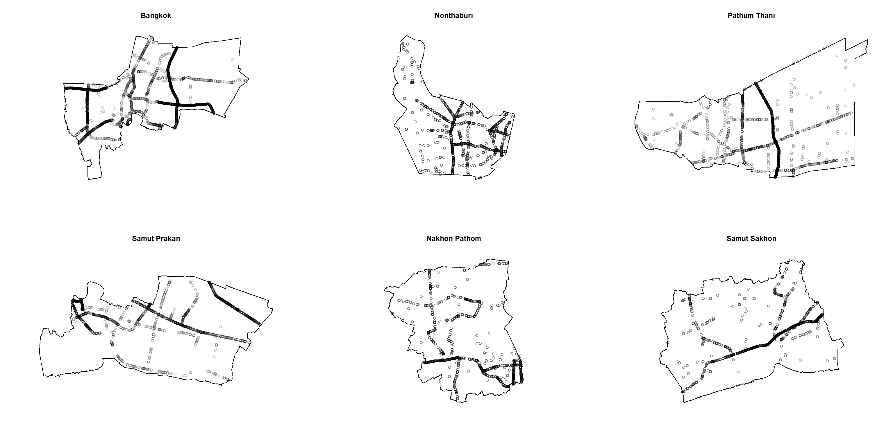
par(mfrow = c(1, 1))Clark-Evans test for spatial randomness of accidents in each province.
clark_evans_bangkok <- clarkevans.test(Bangkok_ppp, correction = "none", clipregion = Bangkok_owen, alternative = "two.sided", nsim = 999)
clark_evans_nonthaburi <- clarkevans.test(Nonthaburi_ppp, correction = "none", clipregion = Nonthaburi_owen, alternative = "two.sided", nsim = 999)
clark_evans_pathum_thani <- clarkevans.test(Pathum_Thani_ppp, correction = "none", clipregion = Pathum_Thani_owen, alternative = "two.sided", nsim = 999)
clark_evans_samut_prakan <- clarkevans.test(Samut_Prakan_ppp, correction = "none", clipregion = Samut_Prakan_owen, alternative = "two.sided", nsim = 999)
clark_evans_nakhon_pathom <- clarkevans.test(Nakhon_Pathom_ppp, correction = "none", clipregion = Nakhon_Pathom_owen, alternative = "two.sided", nsim = 999)
clark_evans_samut_sakhon <- clarkevans.test(Samut_Sakhon_ppp, correction = "none", clipregion = Samut_Sakhon_owen, alternative = "two.sided", nsim = 999)
clark_evans_bangkok
Clark-Evans test
No edge correction
Z-test
data: Bangkok_ppp
R = 0.12115, p-value < 2.2e-16
alternative hypothesis: two-sidedclark_evans_nonthaburi
Clark-Evans test
No edge correction
Z-test
data: Nonthaburi_ppp
R = 0.38919, p-value < 2.2e-16
alternative hypothesis: two-sidedclark_evans_pathum_thani
Clark-Evans test
No edge correction
Z-test
data: Pathum_Thani_ppp
R = 0.24798, p-value < 2.2e-16
alternative hypothesis: two-sidedclark_evans_samut_prakan
Clark-Evans test
No edge correction
Z-test
data: Samut_Prakan_ppp
R = 0.14367, p-value < 2.2e-16
alternative hypothesis: two-sidedclark_evans_nakhon_pathom
Clark-Evans test
No edge correction
Z-test
data: Nakhon_Pathom_ppp
R = 0.28949, p-value < 2.2e-16
alternative hypothesis: two-sidedclark_evans_samut_sakhon
Clark-Evans test
No edge correction
Z-test
data: Samut_Sakhon_ppp
R = 0.23989, p-value < 2.2e-16
alternative hypothesis: two-sidedComputing KDE surfaces using bw.diggle method for each province.
bw_bangkok <- bw.diggle(Bangkok_ppp)
bw_nonthaburi <- bw.diggle(Nonthaburi_ppp)
bw_pathum_thani <- bw.diggle(Pathum_Thani_ppp)
bw_samut_prakan <- bw.diggle(Samut_Prakan_ppp)
bw_nakhon_pathom <- bw.diggle(Nakhon_Pathom_ppp)
bw_samut_sakhon <- bw.diggle(Samut_Sakhon_ppp)
kde_bangkok <- density(Bangkok_ppp, sigma = bw_bangkok)
kde_nonthaburi <- density(Nonthaburi_ppp, sigma = bw_nonthaburi)
kde_pathum_thani <- density(Pathum_Thani_ppp, sigma = bw_pathum_thani)
kde_samut_prakan <- density(Samut_Prakan_ppp, sigma = bw_samut_prakan)
kde_nakhon_pathom <- density(Nakhon_Pathom_ppp, sigma = bw_nakhon_pathom)
kde_samut_sakhon <- density(Samut_Sakhon_ppp, sigma = bw_samut_sakhon)
par(mfrow = c(2, 3))
plot(kde_bangkok, main = "Bangkok KDE")
plot(kde_nonthaburi, main = "Nonthaburi KDE")
plot(kde_pathum_thani, main = "Pathum Thani KDE")
plot(kde_samut_prakan, main = "Samut Prakan KDE")
plot(kde_nakhon_pathom, main = "Nakhon Pathom KDE")
plot(kde_samut_sakhon, main = "Samut Sakhon KDE")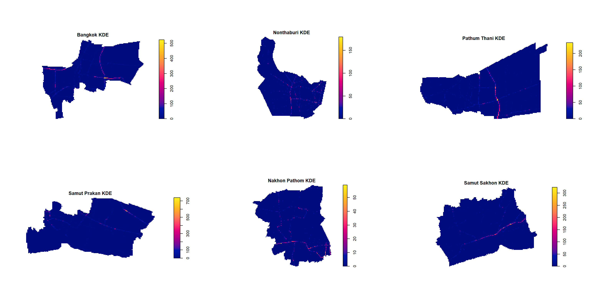
par(mfrow = c(1, 1))7 Second-Order Spatial Point Pattern Analysis
Analysis usinng G-function
Calculating G-function estimation
# ---- G-function ----
G_acc <- Gest(acc_ppp, correction = "border")
plot(G_acc, xlim = c(0, 500))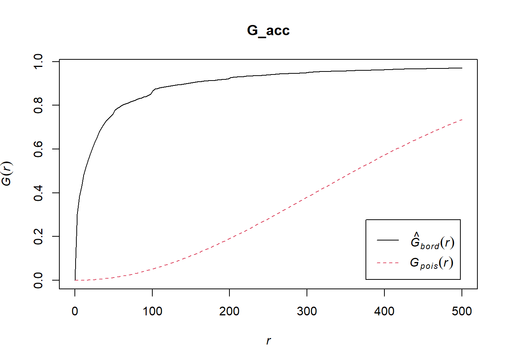
Performing complete spatial randomness test
G_acc.csr <- envelope(acc_ppp, Gest, nsim = 99, rank = 1, global = FALSE)
plot(G_acc.csr)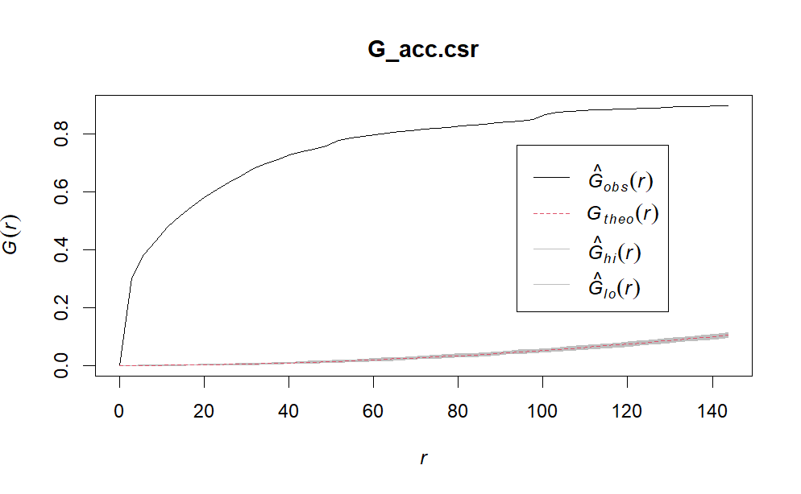
Analysis using F-function
Calculating F-function estimation
# ---- F-function ----
F_acc <- Fest(acc_ppp)
plot(F_acc)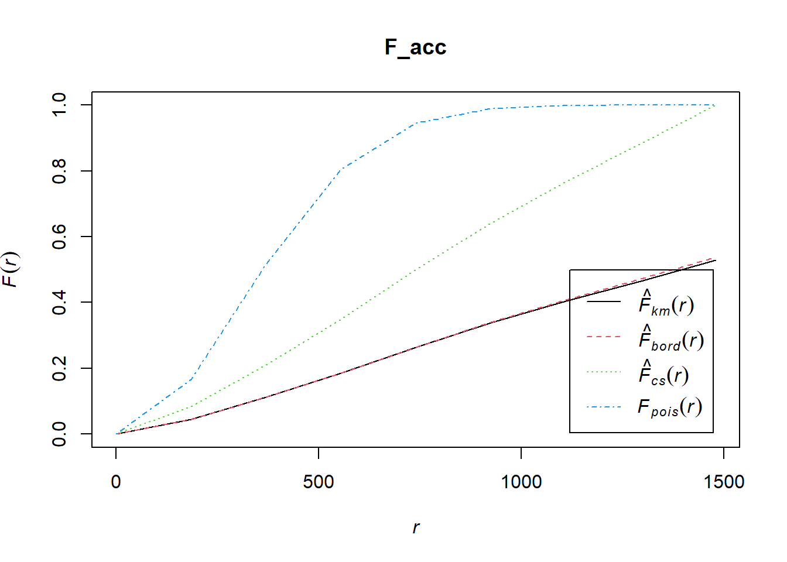
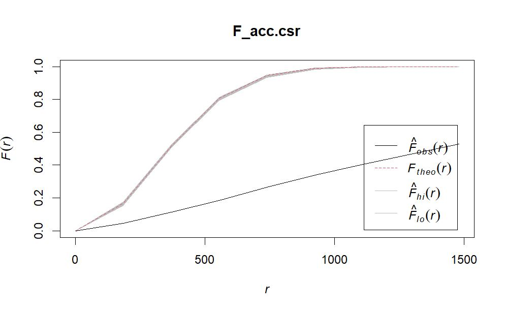
Performing complete spatial randomness test
F_acc.csr <- envelope(acc_ppp, Fest, nsim = 99, rank = 1, global = FALSE)
plot(F_acc.csr)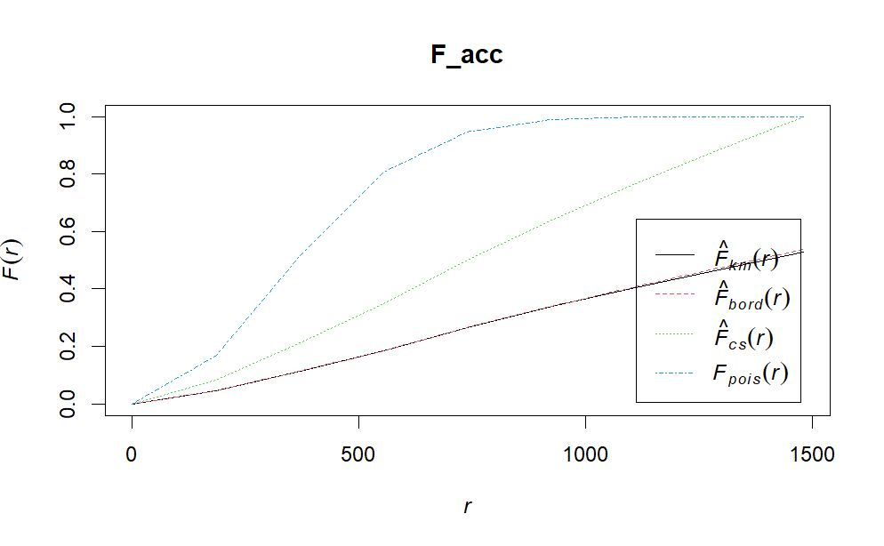
Analysis using K-function
Calculating K-function estimation
# ---- K-function ----
K_acc <- Kest(acc_ppp, correction = "Ripley")
plot(K_acc, . - r ~ r, ylab = "K(d)-r", xlab = "d(m)")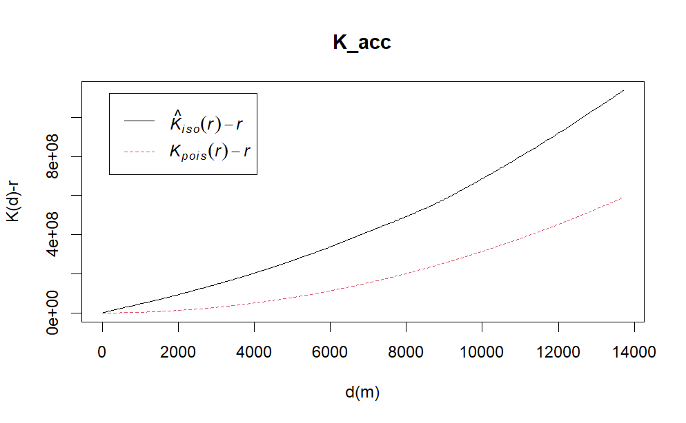
Performing complete spatial randomness test
K_acc.csr <- envelope(acc_ppp, Kest, nsim = 99, rank = 1, global = FALSE)
plot(K_acc.csr, . - r ~ r, xlab = "d", ylab = "K(d)-r")
Note
Generating 99 simulated realisations of CSR ... 1, 2, [1.7 days remaining, estimate finish 2026-09-27 04:27:49]
K CSR test processing take a long time, then I decided to scale down the size.bmr_acc_2022 <- bmr_acc_sf %>%
filter(year(incident_datetime) == 2022)
acc_2022_ppp <- as.ppp(st_coordinates(bmr_acc_2022), W = bmr_owin)
K_acc_2022 <- Kest(acc_2022_ppp, correction = "Ripley")plot(K_acc_2022, . - r ~ r, ylab = "K(d)-r", xlab = "d(m)")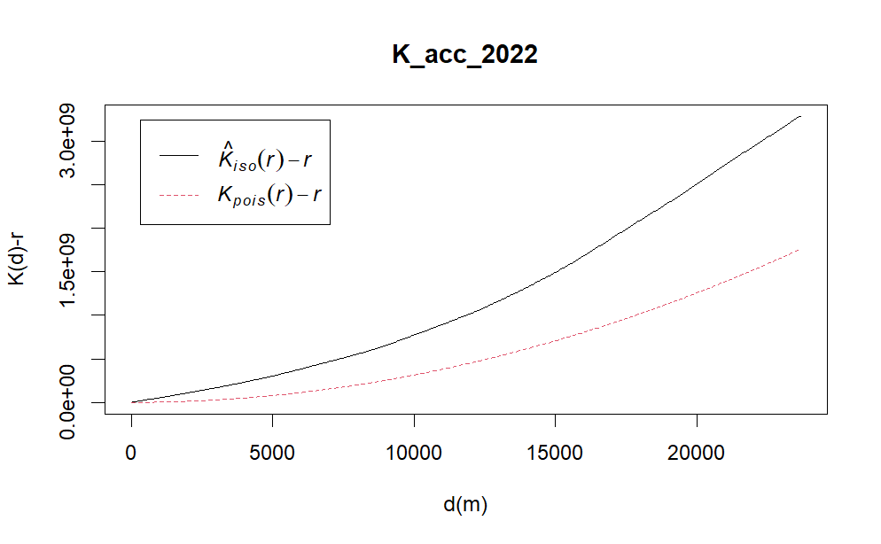
K_acc_2022.csr <- envelope(acc_2022_ppp, Kest, nsim = 99, rank = 1, global = FALSE)
plot(K_acc_2022.csr, . - r ~ r, xlab = "d", ylab = "K(d)-r")Analysis using L-function
Calculating L-function estimation
# ---- L-function ----
L_acc <- Lest(acc_ppp, correction = "Ripley")
plot(L_acc, . - r ~ r, ylab = "L(d)-r", xlab = "d(m)")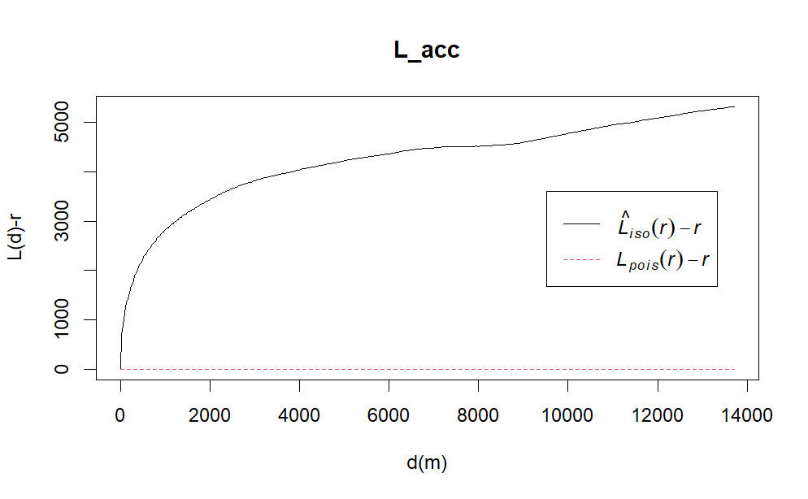
Performing complete spatial randomness test
L_acc.csr <- envelope(acc_ppp, Lest, nsim = 99, rank = 1, global = FALSE)
plot(L_acc.csr, . - r ~ r, xlab = "d", ylab = "L(d)-r")